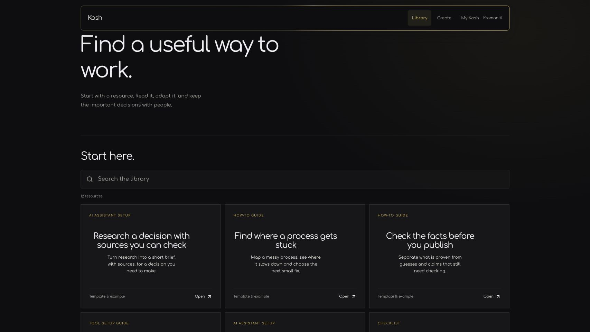
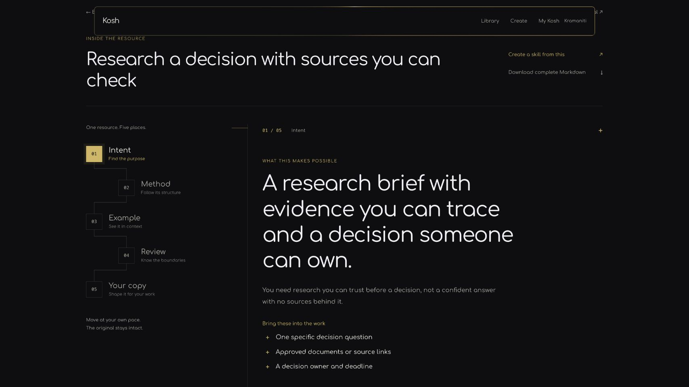
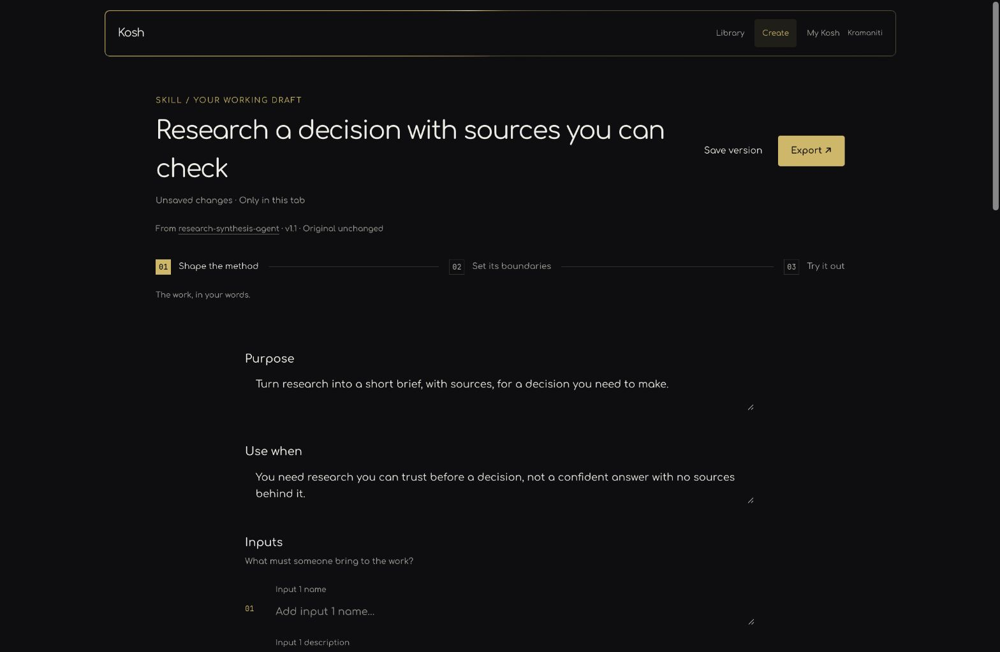

02 / Full case study
Kosh
with a way through.
A resource library and skill builder for finding, understanding, adapting, and testing practical AI-work resources.

The problem
How do you make reusable knowledge approachable without losing its source or its boundaries?
Kosh begins with what a resource helps someone do, not with technical labels. Each detail view separates intent, method, examples, review, and a personal copy.
The builder then makes adaptation a sequence: method, boundaries, testing, and export. The original resource stays visible and unchanged while the person creates something they can use.
The sequence
From finding
to responsible use.

Plain-language spaces make a resource inspectable before it is adapted.

The creation flow exposes boundaries and review points instead of hiding them.
A necessary boundary
Useful intelligence still needs
human checkpoints.
The captured interface does not support a live-AI claim. Its strongest evidence is the UX model: preserve the source, make adaptation explicit, and leave room for testing and human review.